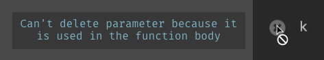
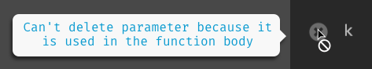
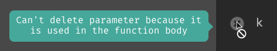
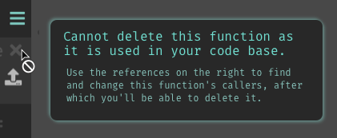

Onboard
with tooltips
Our onboarding problem
New users are unable to learn Dark without the aid of an external source (ie: a reference or walkthrough videos).
I've been an advocate for in-editor onboarding since I joined. But we were never able to make time for the initiative until recently.
Why did it take be a priority?
The Navigator and the Explorer
Our initial business positioning rippled into our roadmap (and how we prioritized features).

Dark initially positioned itself as a new language; it attracted attention from the programming languages community.
People within it approached new concepts with patience, willing to learn first before doing.
But they rarely ship projects in Dark.
The most successful demographic, who ship projects in Dark, turns out to be new developers, students, and front-end or fullstack engineers. They explore new territory and learn by doing!

How can we tailor learning Dark for the explorer?
- Project tutorials. Most Javascript frameworks start with a todo List tutorial because many frontend engineers are explorers.
- Tooltips have been aiding people to learn software through exploration. They provide additional information to what non-obvious icons mean and suggest actions users can perform.
- Code sharing empowers users to learn from one another and build upon eachother's knowledge.
Let's focus one for now
- Tooltips have been aiding people to learn software through exploration. They provide additional information to what non-obvious icons mean and suggest actions users can perform.
Current conditions
We already have tooltips, but they are inconsistent in both style and behavior.
 |
|
 |
 |
My role: Design consistent tooltips
To do so I must consider:
How do we change existing tooltips to a single style?
And also how can we future-proof the solution to ensure new tooltips adhere will to the same style?
Understanding the problem
Consistency can't be achieved with just rigor to a style alone.
Our tooltips mess did not happen because every contributor had a different aesthetic taste. We got here because, every time we added a new tooltip, we aimed only to solve the current problem.
Let's take a step back to understand what we were trying to achieve in the past, and what we want to achieve in the future.
I approached this problem...
First, find all instances where tooltips are used in the editor.
Then I categorized them by the functions they serve.
Lastly, theorized how we can use tooltips in the future to either introduce Dark to new users or highlight new features to seasoned users.
Taxonomize the chaos
| Our editor has over 60 instances of tooltips, but they all fall into at least one of the four categories: | |
| Labels -- provide text equivalents (in 5 words or less) to icons | |
| Descriptions -- explain UI elements in more detail in a few sentences | |
| Exceptions -- explain deviations from expected behaviors | |
| Suggested actions -- tells a user to do something to help them along | |
Imagining a better world
Right now our tooltips have no memory.
They will show regardless if the user had seen them before. This can be more obstructive than helpful to a seasoned user's workflow.
If only we can determine the conditions they will appear in, then we can use them more often. And use them to help users learn Dark within the editor.
Tooltips will also need a trigger condition. It will determine if the tooltip should appear or not. For example: has the user seen this tooltip 10 times already?
Now that we know, what our tooltip component will need. And also what it should be able to support. Let's get designing!
Define product requirements

What do all tooltips have? Text.

What type of text?
Always a short message, sometimes followed by a longer description.
when & where should the tooltip show?
All tooltips are attached to a UI element, to which it will appear adjacent. And all tooltips will have a trigger condition. In most cases, it is upon hover.
and what else?

Some tooltips may contain a CTA. The action button will have a button label and an on click handler
The component model
A tooltip component will have...
| Property | Data type | Required? |
|---|---|---|
| Attached element | DOM element | Yes |
| Title | Text | Yes |
| Description | Text | No |
| Trigger condition | Function | Yes |
| Button label | Text | No |
| Button action | Function | No |
Now we've got the product requirements down, let's make it pretty!
- From our data model we will need mocks for:
- Tooltip with just a title
- Tooltip with title and description
- Tooltip with title and action button
Decide on a style
First I made 6 different treatments.
|  |  |  |
 |  |  |
Decide on a style
We voted internally and chose the top 3.
| ||
They were within the Dark style guidelines, so any chosen will be ok.
I hashed out the details for our top contenders. And made mocks for tooltips with a description and an action button.
 |
 |  |
 |
 |
 |
Giving our users a voice
We asked our users to vote on the top 3 styles
| and this won out | ||
| | |
| then I made additional adjustments for contrast visibility | ||
| | |
Testing out the tooltip component
If you recall, the goal of this project is to make all our existing tooltips conform to the new component's style. When I applied the component model to exisiting tooltips, I realized we missed capturing one category.
Exceptions -- explain deviations from expected behaviors
Nowhere in our component design, do we distinguish between an informational tooltip from an exception tooltip.
So let's revise our tooltip model
Revised model
| Property | Data type | Required? |
|---|---|---|
| Attached element | DOM element | Yes |
| Title | Text | Yes |
| Description | Text | No |
| Trigger condition | Function | Yes |
| Button label | Text | No |
| Button action | Function | No |
| Style | INFO or EXCEPTION | Yes |
Translating the new style property into UI
| INFO | | | |
| EXCEPTION |  |  |
Instead of giving the exception style tooltips a red background, I made a deliberate choice to have the red title text on light background. Otherwise color-blind users will have difficulty distinguishing between red and marine tooltips.
Feasibility Test
If I am ever unsure about the feasibility of my designs, I will test it out first.
See the Pen Tooltips by Alice Q (@alice) on CodePen.
I checked it is possible for the engineer implementing this feature to easily designate on which side the tooltip should appear relative to the UI element it is attached to.
Future tooltips
The first part of this project was to make existing tooltips consistent. But I also want to make it possible to onboard new users with them.
From watching many first time users struggle with our product, I wrote a proposal for all the places we should have tooltips that don't at the moment.
For example, Dark captures all incoming data, even invalid requests. Users can use that data to construct their program. We want to make sure new users knew about this feature.
Context-aware tooltips
The image shows the element that the tooltip should be attached with, and also the style property (info or exception). The rest of the model is dictated in writing. For all design that requires copy written, I write the copy in the specification document. This not only makes it easy for developers to copy and paste but also for product people to edit it.
| Title | Handle your 404 errors | |
| Description | Dark keeps tracks of all incoming requests. You can create an HTTP handler populated with the data from a 404 request. | |
| Trigger | This tooltip will appear if the project has 404s, and the user has not yet created a handler from their 404s yet. It will appear without them hovering over the 404 icon. |
and when they create a request handler from the 404
| Title | Data from your incoming requests will appear here |
| Trigger | When an HTTP handler is first is created, this tooltip appears automatically |
After defining UI & behavior of tooltips as a component, the conversion guidelines for existing tooltips, and ideas for new tooltips...
I crossed my fingers and hope this feature will be implemented one day.
Luckily, after re-positioning our product with increased focus on in-editor learning.
A product owner used this as a jumping-off point to create an in-editor onboarding flow. And a frontend engineer implemented the tooltip component.
Lessons Learned
- I should have done a contrast check at the very beginning.
- When sharing this with teammates, I should have highlighted the "future tooltips" proposal, instead of presenting it as an auxiliary bonus. It would have provided greater value to users than style consistency.